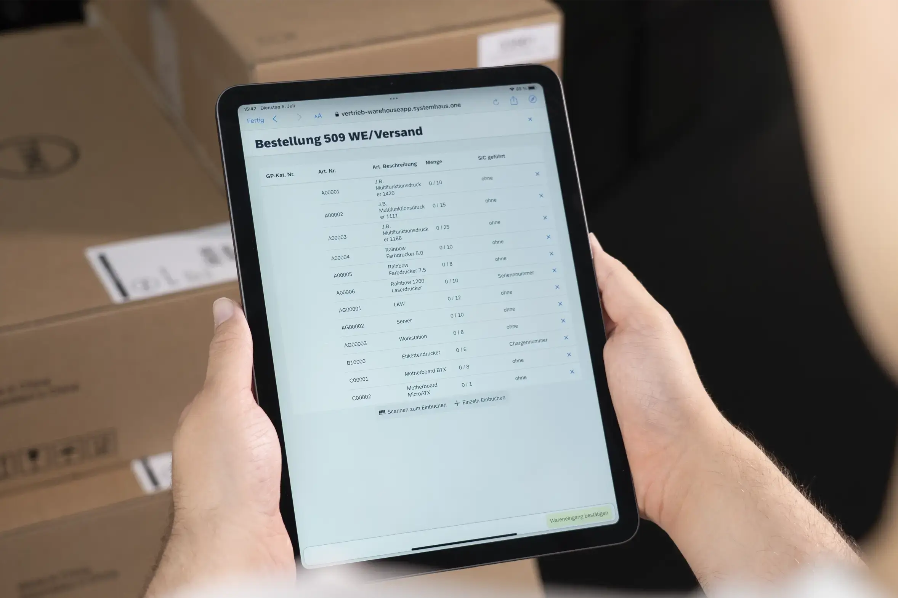

Mobile Lagerverwaltung mit SAP Business One
Die nAG Warehouse App digitalisiert Kommissionierung, Wareneingang, Warenausgang, Inventur, Bestandsumlagerung und Label-Erzeugung direkt dort, wo Lagerarbeit stattfindet: auf MDE-Geräten, Tablets und PCs.

Geräte & Einsatz
Die nAG Warehouse App ist responsiv angelegt und für den Einsatz im Lager auf mehreren Gerätetypen optimiert.
Ob Handscanner im Lagergang, Tablet im Packbereich oder Desktop im Leitstand: die Oberfläche bleibt konsistent nutzbar.
Optional ergänzt ein eigener Windows Service die App und beschleunigt Druckprozesse bei der Lieferschein-Anlage.
Vorteile
Statt leerer Marketingfloskeln stehen hier die Argumente, die operativ und fachlich wirklich zählen.
Durch die Abbildung des SAP-Business-One-Standards bleibt die Einführung in bestehende Prozesse beherrschbar.
Mobile Rückmeldungen reduzieren Medienbrüche, machen Status sichtbar und verbessern die Nachvollziehbarkeit im Lager.
Gerade bei nachvollziehbaren Beständen und Prüfmerkmalen wird mobile Prozessunterstützung zum echten Vorteil.
Demo & Beratung
Wir zeigen, welche Module für Ihre Prozesse relevant sind und wie sich die Lösung in Ihr SAP-Business-One-Umfeld integriert.
Impressum
Offizielle Anschrift und Kontaktdaten der neumeier AG.
Marktstraße 29
84066 Mallersdorf
Vertretungsberechtigt: Thomas Neumeier, Josef Braunrieder
Registergericht: Amtsgericht Straubing
Registernummer: HR B10785